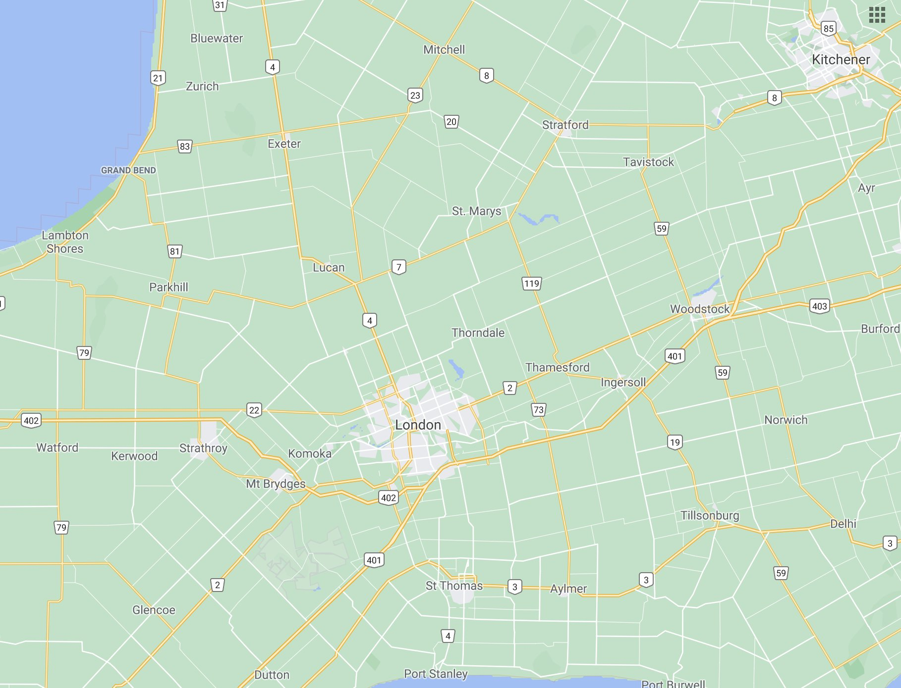
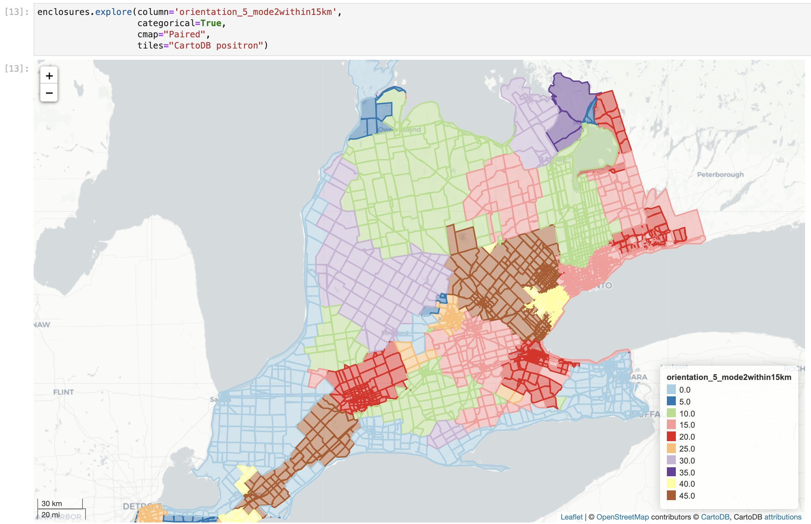
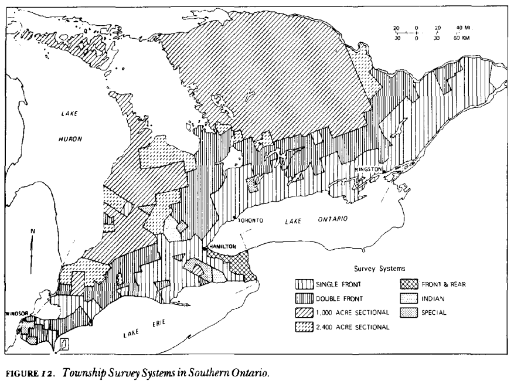

This map started with armchair travelling in Google Maps. I’d noticed that roads in the southern part of the Canadian province of Ontario were arranged in grids, but that there were a number of misaligned grids throughout the region:

To define the area I looked at the different administrative boundaries (admin_level 5 and 6 in OSM) and from these picked the ones I thought delineated the ‘griddiest’ area (very scientific, I know). Initially I tried getting the data into QGIS with the QuickOSM plugin but found that because the features were quite large the query often timed out, so I switched to using overpass turbo. I only wanted the roads which actually formed the grids (I know nothing of Canadian geography or history but Wikipedia leads me to believe these may be concession roads): through trial and error I settled on including everything on OpenStreetMap tagged highway=motorway, highway=trunk, highway=primary, or highway=secondary within the area of interest.
It was fun trying to reverse-engineer a methodology to try to get the different grid areas from just the roads – the basic Python methodology ended up being:
- use the roads and land outline to create enclosures (polygons bounded by roads/boundary of study area)
- calculate the orientation of eacch of these enclosures (technically, the orientation of the longest axis of their binding rectangles) using Martin Fleischmann’s excellent
momepypackage, rounding these values to the nearest 5° - define as ‘neighbours’ of each enclosure: all enclosures that border a given enclosure (ie its direct neighbours), all enclosures that border the enclosures that border a given enclosure (ie its neighbours’ neighbours), and all other enclosures within 15 km
- get the modal orientation value (the one calculated in step two) for each enclosure + its neighbours (as defined above)
The full Python code used to make the map is available in a Jupyter notebook here, albeit you’ll need to provide your own data to reproduce it. If you do get that far though, you can use the .explore() method in geopandas to interactively explore the data:

An interesting point of comparison is this figure from “The Land Surveys Of Ontario 1750–1980”, an article by Louis M. Sebert in a 1980 edition of the journal Cartographica (doi: 10.3138/X1G3-5822-25G2-027M) which gives a bit of insight into how the grids ended up this way:
